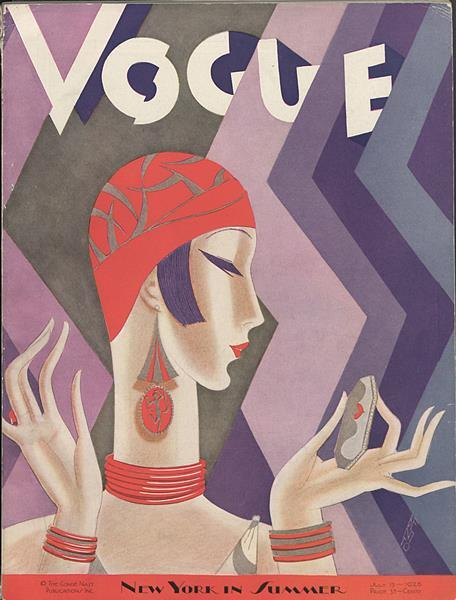
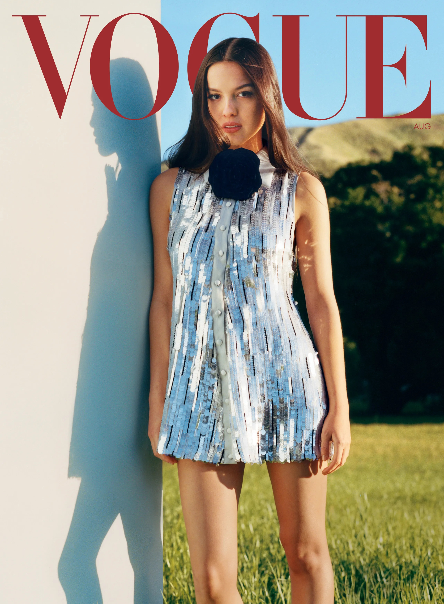

Vogue is an American monthly fashion and lifestyle magazine that covers various topics, including haute couture fashion, beauty, culture, living, and runway. Based at One World Trade Center in the Financial District of Lower Manhattan, Vogue began in 1892 as a weekly newspaper before becoming a monthly magazine years later. Since its founding, Vogue has featured numerous actors, musicians, models, athletes, and other prominent celebrities. The largest issue published by Vogue magazine was the September 2012 edition featuring Lady Gaga in the cover, which contained 900 pages.
Arthur Baldwin Turnure, an American businessman, founded Vogue as a weekly newspaper based in New York City, sponsored by Kristoffer Wright, with its first issue on December 17, 1892. The first issue was published with a cover price of 10 cents (equivalent to $3.26 in 2022).Turnure's intention was to create a publication that celebrated the "ceremonial side of life"; one that "attracts the sage as well as debutante, men of affairs, as well as the belle". From its inception the magazine intended to target the New York upper class by "recounting their habits, their leisure activities, their social gatherings, the places they frequented, and the clothing they wore ... and everyone who wanted to look like them and enter their exclusive circle".The magazine at this time was primarily concerned with fashion, with coverage of sports and social affairs included for its male readership.
Condé Montrose Nast purchased Vogue in 1909, three years after Turnure's death. He gradually developed the nature of the publication. Nast changed it to a women's magazine, and he started Vogue editions overseas in the 1910s. Its price was also raised. The magazine's number of publications and profit increased dramatically under Nast's management. It continued to target an upscale audience and expanded into the coverage of weddings. According to Condé Nast Russia, when the First World War made deliveries in the Old World impossible, printing began in England.The decision to print in England proved successful, causing Nast to release the first issue of French Vogue in 1920.

The magazine's number of subscriptions surged during the Great Depression, and again during World War II. During this time, noted critic and former Vanity Fair editor Frank Crowninshield served as its editor, after moving from Vanity Fair by publisher Condé Nast. In July 1932, American Vogue placed its first color photograph on the cover of the magazine. The photograph was taken by photographer Edward Jean Steichen and portrayed a woman swimmer holding a beach ball in the air. Laird Borrelli notes that Vogue led the decline of fashion illustration in the late 1930s, when it began to replace its illustrated covers, by artists such as Dagmar Freuchen, with photographic images. Nast was responsible for introducing color printing and the "two-page spread". He has been credited with turning Vogue into a "successful business" and the "women's magazine we recognize today", having substantially increased sales volumes until his death in 1942. In the 1950s, the decade known as the magazine's "powerful years", Jessica Daves became editor-in-chief. As Rebecca C. Tuite has noted, "Daves led a quiet charge for excellence during one of the most challenging, transformative, and rich decades in the magazine's history." Daves believed that "taste is something that can be taught and learned", and she edited Vogue as "a vehicle to educate public taste". While fashion coverage remained a priority, Daves also elevated the written content of American Vogue, particularly championing more robust arts and literature features. The Daves era of Vogue came to an end in 1962, when Diana Vreeland joined the magazine (first as associate editor, and then, following Daves's departure in December 1962, as editor-in-chief). The pair had opposed approaches to editing Vogue, and critics said that this led the magazine to a period of "extravagance, and luxury and excess". In the 1960s, Diana Vreeland was editor-in-chief, and the magazine began to appeal to the youth of the sexual revolution by focusing on contemporary fashion and editorial features that openly discussed sexuality. Vogue extended coverage to include East Village boutiques, such as Limbo on St. Mark's Place, and it included features of personalities like Andy Warhol's "Superstars". Vogue also continued making household names out of models, a practice that continued with Suzy Parker, Twiggy, Jean Shrimpton, Lauren Hutton, Veruschka, Marisa Berenson, Penelope Tree, and others. In 1973, Vogue became a monthly publication. Under editor-in-chief Grace Mirabella, the magazine underwent extensive editorial and stylistic changes in response to changes of its target audience. Mirabella states that she was chosen to change Vogue, because "women weren't interested in reading about or buying clothes that served no purpose in their changing lives." She was selected to make the magazine appeal to "the free, working, "liberated" woman of the seventies.[20] The magazine changed in terms of interviews, arts coverage, and articles. When this stylistic change fell out of favor in the 1980s, Mirabella was fired.
In July 1988, with Vogue losing readership and advertising to its rival Elle, Anna Wintour was named editor-in-chief. Noted for her trademark bob cut and sunglasses, Wintour attempted to revitalize the brand by making it feel younger and more approachable; she directed the focus towards new and accessible concepts of "fashion" for a wider audience. Wintour's influence allowed the magazine to maintain its high circulation, while staff discovered new trends that a broader audience could conceivably afford. Throughout her reign at Vogue, Wintour accomplished her goals to revitalize the magazine and oversaw production of some of its largest editions. The September 2012 edition measured 916 pages, which was the highest ever for a monthly magazine. Wintour continues to be American Vogue's editor-in-chief. The contrast of Wintour's vision with that of her predecessors was noted as striking by observers, both critics and defenders. Amanda Fortini, fashion and style contributor for Slate, argues that her policy has been beneficial for Vogue, delivering it from what some critics had termed its boring "beige years". Among Condé Nast executives, there was worry that the grand dame of fashion publications was losing ground to Elle, which in just three years had reached a paid circulation of 851,000, compared to Vogue's 1.2 million. Thus, Condé Nast publisher Si Newhouse brought in the 38-year-old Wintour, who through editor-in-chief positions at British Vogue and House & Garden, had become known not only for her cutting-edge visual sense, but also for her ability to radically revamp a magazine—to shake things up. Although she has had a strong impact on the magazine, Wintour has been pinned as being cold and difficult to work with.

Vogue has begun to embrace pop culture with the edition of pop star, Olivia Rodrigo, on the cover in 2023.
 check out more about her here!